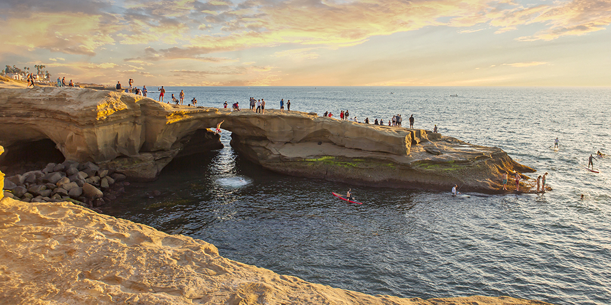

Hi! I am Elias Damian. I was born in Mexico and lived there for some years and moved to California when I was very young, so I mostly grew up in California. I have had so many amazing experiences throughout my life that have brought me joy! One of the things that I love to do is help people. I have participated in many different projects throughout my life. Here is a video of one of the organizations I often participate with:
There are a lot of other activities that bring me joy, my favorite bring sunsets and the outdoors. Here are a few pictures that always amaze me!
